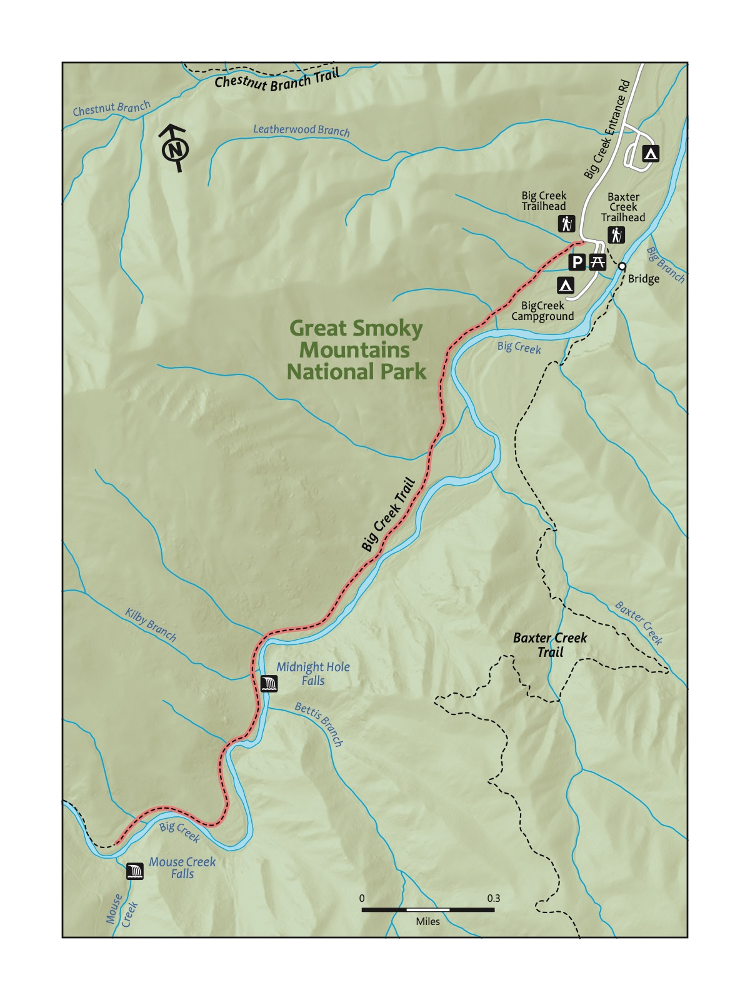
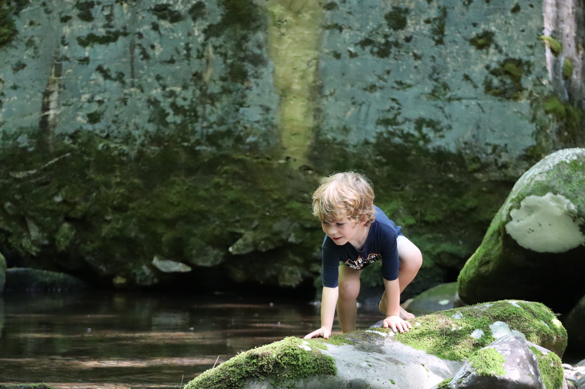

Trail 22: Mouse Creek
Key Characteristics
| Trail Name | Mouse Creek Falls |
|---|---|
| Region | Great Smoky Mountains National Park |
| Trail # | 20 |
| Time Estimate - Hiking Fast | 2 hours |
| Time Estimate - Hiking Slowly | 4 hours |
| Trail Distance (Miles) | 4.0 |
| Elevation Change | Moderate |
| Pets | Not Allowed |
| Parking Pass/Entrance Fee | Required |
| Restroom(s) | Yes (seasonal) |
| Terrain | Dirt path; rocky path |

Overview
Surprisingly close to Knoxville, given how remote and wild this trailhead and trail feels, Mouse Creek in the Big Creek area of the Smokies is quite a bit less well-known than many of the other trails in the Great Smoky Mountains National Park in this book. The creek that this trail follows looks otherwordly - clear and almost turquoise in color. This hike starts at a trailhead at the Big Creek Picnic Area — beside the Big Creek Campground. The trail starts off a little steep, but the trail is wide and smooth; like the Middle Prong trail, this trail used to be a railroad bed. The trail follows above the creek and then returns closer to it, with Mouse Creek Falls as the turn-around. A good day-trip adventure for kids and families; the smooth grade makes this an achievable hike for younger littles.

Directions to the Trailhead
| Trailhead Address | Big Creek Picnic Area, QV2R+H6 Newport, Tennessee |
|---|---|
| Trailhead GPS Coordinates | 35.75132, -83.10964 |
Navigate to the Big Creek Picnic Area. Note that the above address uses a Google Maps “Plus code” in the absence of a street address for this picnic area; the plus code only works in Google Maps. The picnic area is at the end of a bumpy dirt road; it’s large and easy to find. You may note the Big Creek Trailhead on the way (it was on the right, immediately before the parking lot). Park and then backtrack a little on the road you took to the parking area to find the start of this trail. Kids may like to play around the picnic area (and the pretty bridge crossing Big Creek) before or after the hike!
Trail Description
| Distance from Start | Description |
|---|---|
| 0.0 | Start on the Big Creek Trail. Gradually ascend. |
| 0.1 | Ascend grardually on a wide path. |
| 1.4 | Midnight Hole Falls. Great swimming spot in the summer. |
| 2.0 | Mouse Creek Falls. Turn-around spot. Head back to the start. Optionally, continue farther on the trail. |
| 4.0 | Trailhead. |
Nearby
- Picnicking at a lovely picnic area. The Big Creek Picnic Area is one of the finest spots to picnic in the Great Smoky Mountains National Park. Start or end your hike with a picnic here.